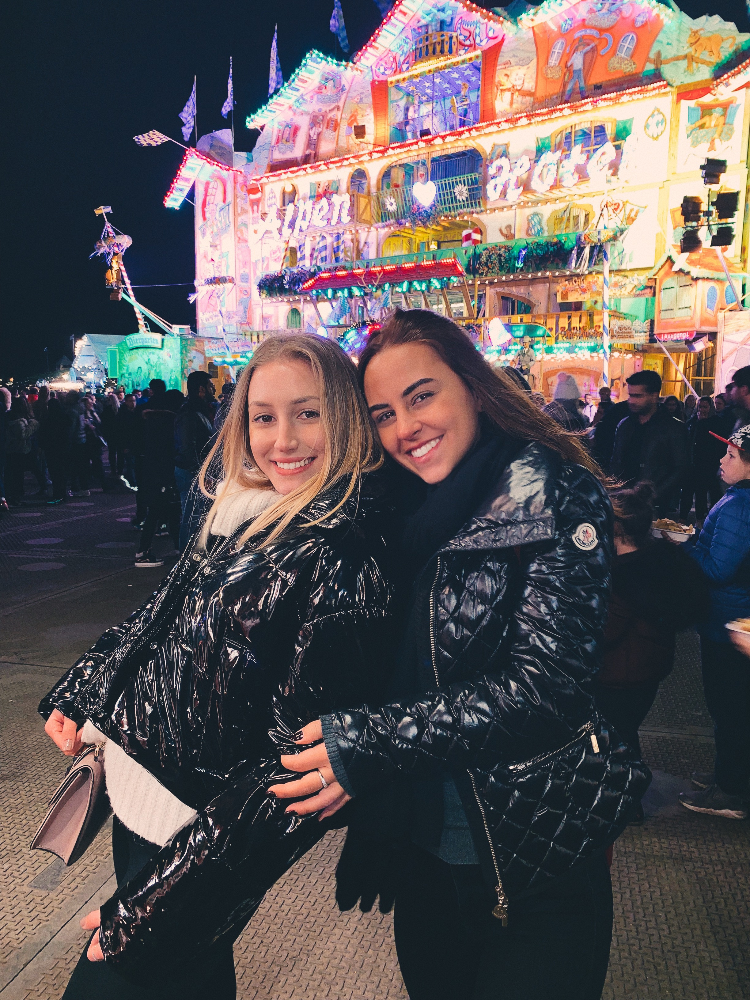
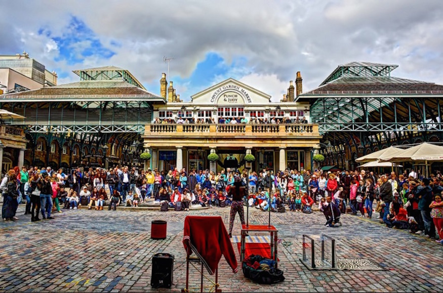
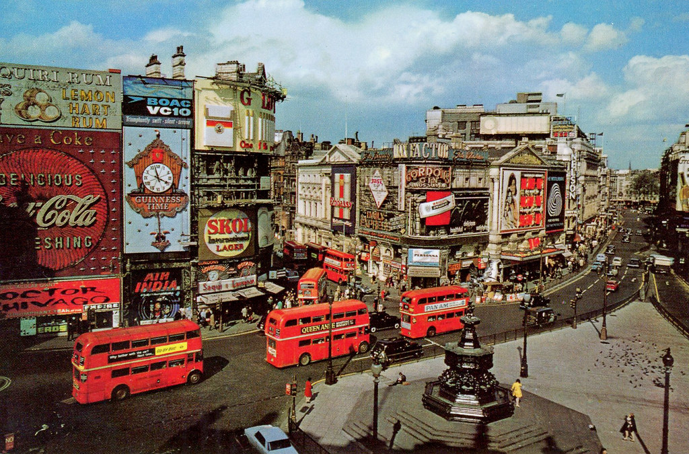
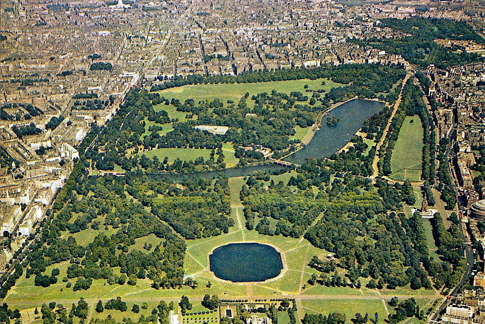
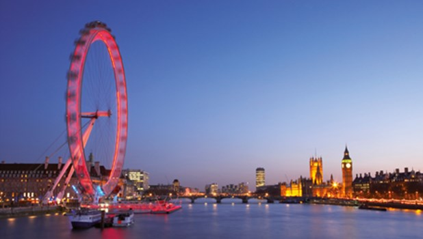
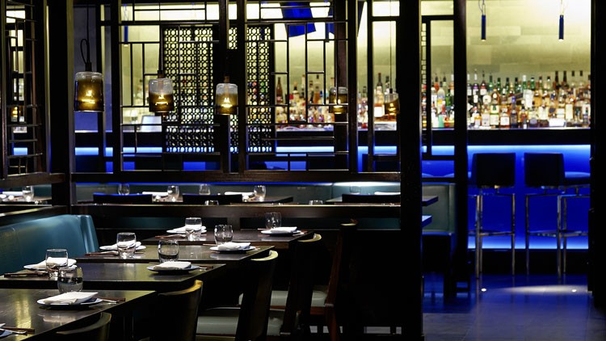
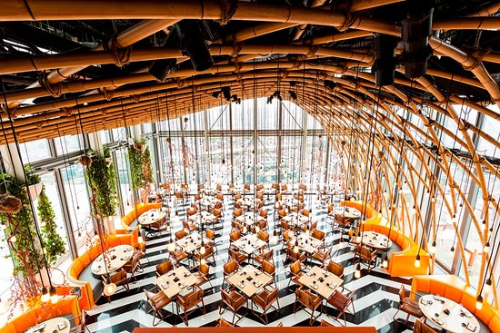

The Cicchetti is my favorite restaurant and a delicious Italian. The best plates to order are:
- Carbonara
- Burrata
- Pizza of any flavor
- Bruschetta
- Bolognesa
The main places you should visit in London, my favourite city.
Here is a picture of me in London last year.
The beautiful covent Garden is full os street performers and delicious restayurants.
Piccadilly Circus is a beautiful place to walk around through stores and watch the big screens.
The peaceful Hyde Park is located right in the middle of the city and is an amazing place to walk around on a sunny day and have a picnic.
The Buckingham Palace is a the perfect place to walk through the day, as it is surrounded by famous streets.

The royal Palace of Westminster is a must go to place as it is a beautiful place to visit and represents a huge part of London's History.
To London Eye is across form the Palac e of Westminster and is holds the most beautiful view of the entire city.
My favorite restaurants in London and the ones you must go to when you visit are Chichetti, Brunch at Granger & Co in Notting Hill, Hakkasan and Sushi Samba.
The Cicchetti is my favorite restaurant and a delicious Italian. The best plates to order are:
To walk through Notting Hill and have brunch at Granger & Co is the perfect program for a Sunday morning.
Hakkasan is the best Chinese restaurant with a lively atmosphere, the ideal choice for a cheered up dinner.
Sushi samba is the best sushi at a rooftop with a marvelous view of the city, a great choice for a lunch on a sunny day.